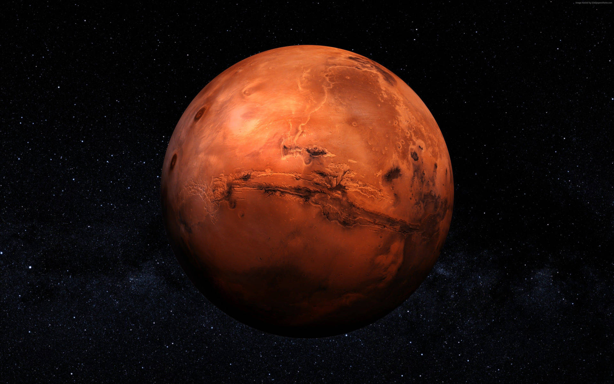

Marte
INFORMAȚII DESPRE PLANETA MARTE
Marte este a patra planetă de la soare și
este un deşert rece, acoperit de praf. Oxizii
de fier alcătuiesc acest praf, care conferă
planetei nuanţa roșie distinctă.
Marte este
stâncoasă, cu munți, văi şi canioane,
precum și furtuni care variază de la tornade
mici de praf asemănători unei tornade până
la furtuni de praf ce înghit planete.
Marte este o planetă dură și rece.
Temperatura pe Marte este mult mai rece
decât pe Pământ deoarece planeta este
mult mai departe de soare. În medie,
temperatura pe Marte este de aproximativ
minus 60 grade Celsius.
Oamenii de știință au descoperit indicaţii ale
unui lac lichid sub suprafața calotei de
gheaţă a polului sudic în iulie 2018. Este
pentru prima dată când există un corp
permanent de apă pe Marte. Aceștia cred,
de asemenea, că în trecut, Marte ar fi avut
condiţiile necesare pentru a susține viața,
cum ar fi bacterii și alți microbi. De aceea, în
ultimii ani se fac foarte multe studii pentru a afla dacă este posibilă supraviețuirea
oamenilor pe Planeta Roșie.
CURIOZITĂȚI DESPRE PLANETA MARTE
- Pe planeta Marte poți să sari de 3 ori mai sus decât pe Pământ, datorită forței sale garvitaționale mai slabe.
- Marte are două luni, una se numește Phobos iar cealaltă Deimos.
- O zi pe Marte durează 24 de ore şi 37 minute.
- Marte este casa celui mai mare munte din sistemul nostru solar, un vulcan numit Olympus Mons.
- Marte este a doua cea mai mică planetă din sistemul nostru solar, după Mercur.